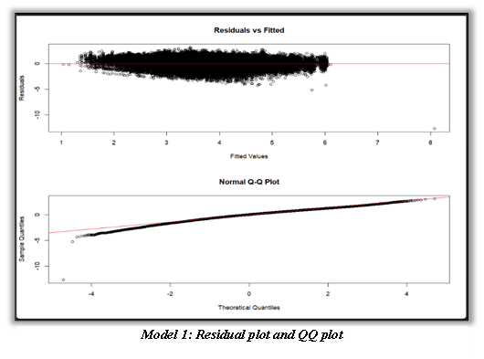
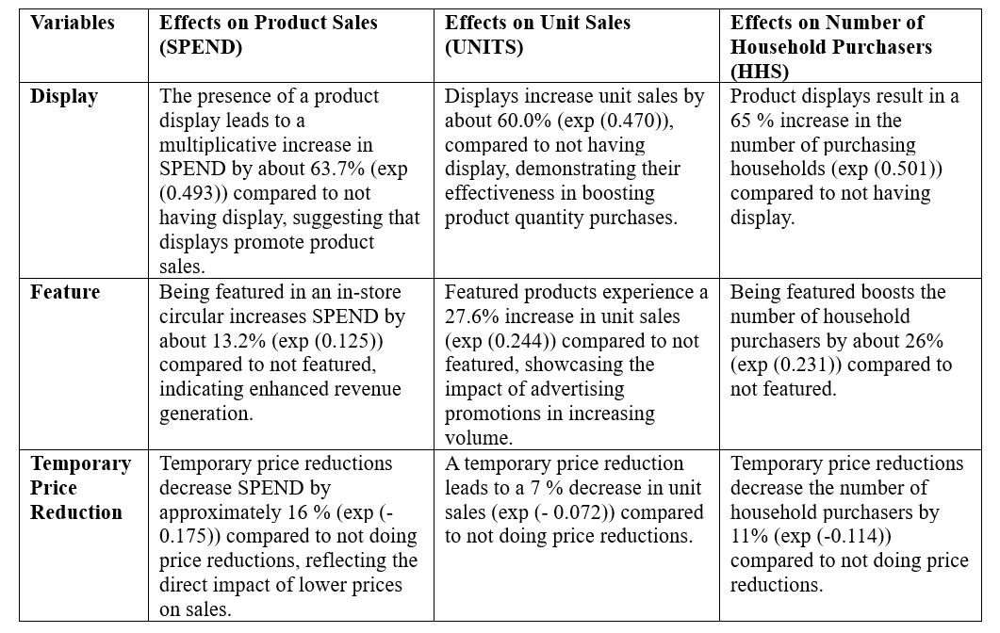

Analyzing retail sales to optimize promotional and pricing strategies using advanced statistical models
This project analyzes sales and promotion data for various product categories from a large retail chain using mixed modeling techniques in R to understand the impact of different promotional and pricing strategies on product performance.
Preparing the data
Exploring the data
Modelling the data
Based on the hierarchical nature of the data featuring multiple levels of nested data structures and the questions we need to answer, I used Mixed Effects models for our analysis. This includes products (identified by UPCs) that are nested within stores, and both products and stores are subject to various fixed effects like pricing, promotions (FEATURE, DISPLAY, TPR_ONLY), and store characteristics (SIZE, AVG_WEEKLY_BASKETS).
Mixed-effects models provide the necessary statistical framework to account for the nested data structure, control for multiple levels of variability, and handle the mixed influences of both observed and unobserved factors on the outcomes of interest. This approach ensures robust, accurate, and interpretable results that can inform strategic decisions based on the analysis.
Assumptions Check: Validated model assumptions through residual plots and QQ plots, ensuring robust and reliable results.
Similiarly, assumption are also checked for other models to ensure reliability of the output.
RESULTS INTREPRETATION
The results of each model are summarized with a stargazer output in R so we can answer questions for the retail chain based on these outputs and draw statistical inferences accurately based on the numerical values of the coefficients.
The Log coefficients are exponentiated to give a percentage change for easy intrepretability.
What are the effects of product display, being featured on in-store circular, and temporary price reduction on product sales (spend), unit sales, and number of household purchasers?
How do the effects of display, feature, and TPR on SPEND vary by product categories (cold cereals, frozen pizza, bag snacks) and store segments (mainstream, upscale, value)?
What are the five most price elastic and five least price elastic products? Price elasticity is the change in units sold for change in product price.
Using Model 2, we compute the coefficients of log(Price) for each product (UPC) which is the sum of fixed effect and random effect.
Log of
price indicates the percentage change in Units for a percentage change in
price. (elasticity). The
UPCs with the highest absolute values have the highest price elasticity and
those with lowest absolute values have lowest price elasticity.
This site was created with the Nicepage